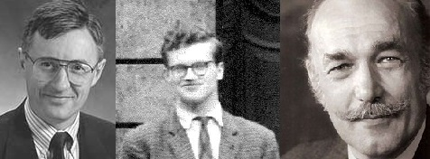

1 Introdução e Panorama dos Modelos de Regressão
Este livro é dedicado aos estudos de Modelos de Regressão, desde a formulação clássica até extensões modernas. O material apoia as disciplinas Modelos de Regressão I (CC0290) e Modelagem Estatística (CC0452), ambas com implementação no software R. Ao longo do semestre, o estudante terá contato tanto com a fundamentação matemática e estatística quanto com aplicações práticas em diferentes áreas, utilizando ferramentas computacionais para explorar dados reais.
O curso está estruturado de forma progressiva: parte-se da regressão linear simples, como porta de entrada ao raciocínio de modelagem, avança-se para a regressão linear múltipla, inclusão de variáveis categóricas e técnicas de seleção de variáveis e análise de diagnóstico. Tópicos adicionais como modelos lineares generalizados (MLGs), extensões não lineares e métodos de regularização também serão apresentados.
Mais do que aprender procedimentos técnicos, o objetivo é desenvolver a capacidade de interpretar resultados, avaliar a adequação dos modelos e comunicar conclusões de forma clara. A ênfase está tanto na teoria quanto na prática, de modo que o estudante seja capaz de aplicar a modelagem estatística em contextos multidisciplinares.
1.1 A centralidade da regressão
A análise de regressão ocupa posição central na Estatística e, em especial, na Econometria. Como afirma Hoffmann (2016):
“A análise de regressão é o método mais importante da econometria.”
Essa afirmação reflete o fato de que praticamente toda modelagem econométrica, seja para estimar elasticidades, avaliar políticas públicas, medir impactos ou testar teorias, passa, de alguma forma, por um modelo de regressão.
Mas essa centralidade não é exclusiva da economia. Na saúde, a regressão mede risco e associações; na engenharia, modela desempenho; nas ciências ambientais, estima impactos; nas ciências sociais, investiga relações estruturais; na ciência de dados, permanece como ferramenta interpretável diante de modelos mais complexos.
A regressão tornou-se, portanto, uma linguagem universal para responder a uma pergunta fundamental:
Como varia uma quantidade quando outra varia?
Essa pergunta é simples. A resposta exige matemática, probabilidade, inferência e interpretação.
1.2 Objetivos do livro
- Contextualizar historicamente os modelos de regressão;
- Compreender a lógica da modelagem estatística: componente sistemático, componente aleatório e relação entre estes;
- Apresentar e discutir os principais modelos abordados na disciplina;
- Conectar a teoria com aplicações em economia, saúde, engenharia, ciências sociais e ambientais;
- Discutir potenciais e limitações de cada abordagem, reconhecendo as hipóteses subjacentes;
- Desenvolver a capacidade de usar ferramentas computacionais para ajuste, diagnóstico e interpretação de modelos.
Este material é concebidao como uma jornada pela família dos modelos de regressão. Partimos de um problema simples, como relacionar uma variável resposta a uma variável explicativa, e avançamos gradualmente até modelos capazes de lidar com múltiplos fatores, variáveis categóricas, dados de contagem, proporções e situações em que as hipóteses clássicas do modelo deixam de ser válidas.
A ideia central é que, ao final do semestre, o estudante seja capaz de compreender não apenas como ajustar um modelo, mas também quando e por que usá-lo, avaliando sua adequação e reconhecendo seus limites.
1.3 Breve História da Regressão
A regressão, como hoje conhecemos, é fruto de mais de um século de evolução teórica e prática. Seu ponto de partida remonta ao século XIX, quando estudos empíricos sobre hereditariedade começaram a revelar regularidades que poderiam ser descritas matematicamente. Desde então, a regressão deixou de ser apenas uma curiosidade biológica e tornou-se um dos pilares da estatística moderna, sustentando análises nas mais diversas áreas.
1.3.1 Francis Galton (1822–1911)

A história da regressão começa com uma inquietação simples, quase doméstica. No final do século XIX, Francis Galton observava famílias inglesas e fazia uma pergunta que parecia trivial, mas que mudaria a estatística para sempre: filhos de pais muito altos serão igualmente altos?
Ao analisar dados de estaturas familiares, Galton percebeu algo intrigante: filhos de pais muito altos tendiam a ser altos, mas não tanto quanto seus pais; filhos de pais muito baixos tendiam a ser baixos, mas não tão baixos quanto seus progenitores. Havia uma força invisível puxando as medidas extremas de volta ao centro. Em 1886 (Galton (1886a); Galton (1886b)), ele chamou esse fenômeno de regression toward mediocrity.
Sem perceber completamente, Galton havia introduzido quatro pilares da regressão moderna:
uma variável resposta, uma variável explicativa, uma média condicional e uma variabilidade em torno dessa média.
A matemática ainda era rudimentar. Mas a ideia estava lançada.
1.3.2 Karl Pearson (1857–1936)

Se Galton teve a intuição, Karl Pearson deu forma matemática ao fenômeno. Discípulo e colaborador de Galton, Pearson transformou observações empíricas em estrutura formal. Desenvolveu o coeficiente de correlação linear, sistematizou métodos de ajuste e ajudou a fundar o primeiro departamento de estatística do mundo, no University College London. Criou também a revista Biometrika, marco na consolidação da estatística como disciplina científica.
A regressão deixava de ser apenas uma regularidade observada em dados biológicos. Tornava-se parte da teoria da probabilidade e da estatística matemática (Pearson; Lee (1903)).
O que antes era descrição começava a se tornar método.
1.3.3 Ronald A. Fisher (1890–1962)
Nas décadas seguintes, a estatística enfrentava um novo desafio: não bastava ajustar curvas; era preciso decidir. Ronald A. Fisher foi o arquiteto dessa virada. Na década de 1920, incorporou fundamentos de inferência à regressão e redefiniu o papel da estatística na ciência.
Com Fisher surgem a análise de variância (ANOVA), o método da máxima verossimilhança e os princípios modernos de planejamento experimental. A regressão passa a permitir testar hipóteses, construir intervalos de confiança e quantificar incertezas.
A técnica deixa de ser apenas descritiva. Torna-se ferramenta de decisão científica.
1.3.4 Jerzy Neyman (1894–1981) & Egon Pearson (1895–1980)
A década de 1930 marca outro salto conceitual. Jerzy Neyman e Egon Pearson, filho de Karl Pearson, estruturam formalmente os testes de hipóteses. Definem os erros do tipo I e tipo II, introduzem critérios de decisão e consolidam o conceito de intervalo de confiança.
A regressão, agora, não apenas estima relações: ela fornece regras claras para aceitar ou rejeitar hipóteses. A incerteza passa a ser quantificada de maneira sistemática.
O método ganha rigor lógico.
1.3.5 John Tukey (1915–2000)

Mas a estatística não evolui apenas por formalização. Na década de 1950, John Tukey propõe algo radical: antes de testar, é preciso explorar. Defende que os dados devem ser interrogados visualmente. Populariza gráficos de resíduos, diagnósticos e técnicas exploratórias.
A regressão passa a ser acompanhada por perguntas práticas:
os pressupostos fazem sentido? há pontos influentes? o modelo realmente representa os dados?
A estatística recupera o diálogo com a realidade empírica.
1.3.6 Peter McCullagh (1952–) & John Nelder (1934–2010)

Com o avanço da computação nas décadas de 1960 e 1970, a regressão amplia suas fronteiras. A álgebra matricial viabiliza modelos com múltiplos preditores, e a necessidade de analisar dados não normais torna-se evidente.
Em 1983, McCullagh e Nelder publicam Generalized Linear Models, obra que sistematiza os Modelos Lineares Generalizados. A regressão deixa de ser restrita a variáveis contínuas normalmente distribuídas. Passa a modelar contagens, proporções, tempos de ocorrência.
A ideia que nasceu da altura de pais e filhos expande-se para praticamente todos os campos científicos.
A regressão não surgiu pronta. Foi construída por inquietações, formalizações, rupturas e expansões. Cada geração acrescentou uma camada: intuição, estrutura, inferência, decisão, diagnóstico e generalização.
O que começou como uma pergunta sobre estatura tornou-se uma das ferramentas centrais da ciência moderna.
1.4 O contexto histórico: eugenia
É necessário reconhecer que parte do desenvolvimento inicial da estatística ocorreu em um contexto marcado por ideias eugenistas. Francis Galton cunhou o termo “eugenia” em 1883. A eugenia defendia o “melhoramento” da raça humana por meio de seleção artificial.
Karl Pearson foi defensor ativo dessas ideias e dirigiu o laboratório Francis Galton para a Eugenia Nacional na University College London. Ronald Fisher também expressou posições eugenistas em seus escritos.
As ideias eugenistas foram posteriormente utilizadas para justificar políticas discriminatórias e violações graves de direitos humanos no século XX. Após a Segunda Guerra Mundial, consolidou-se um consenso internacional de condenação à eugenia como ideologia racista e incompatível com princípios éticos fundamentais.
Essa contextualização histórica não diminui a importância dos avanços metodológicos produzidos por esses autores. Pelo contrário, reforça a necessidade de compreender que métodos estatísticos são ferramentas cujo uso exige responsabilidade ética.
A regressão é instrumento científico poderoso. O modo como é utilizada depende do pesquisador.
1.5 Consolidação da regressão como pilar da Estatística moderna
A trajetória da regressão pode ser compreendida como uma sequência evolutiva:
- Observação empírica da regressão à média (Galton);
- Formalização matemática e correlação (Pearson);
- Inferência e planejamento experimental (Fisher);
- Estrutura formal de testes de hipóteses (Neyman-Pearson);
- Diagnóstico e análise exploratória (Tukey);
- Generalização para modelos lineares generalizados (McCullagh e Nelder);
- Regularização moderna (Ridge e LASSO);
- Integração com ciência de dados e aprendizagem de máquina.
Apesar das transformações metodológicas, a pergunta central permanece:
Qual é a relação média entre uma variável resposta e seus preditores?
1.6 Panorama dos Modelos de Regressão
Tendo em mente os objetivos, estruturas e suposições discutidos anteriormente, é possível visualizar o panorama dos modelos de regressão que compõem esta disciplina. A ideia é seguir uma trajetória progressiva: partir de modelos simples e intuitivos, que permitem enxergar diretamente a relação entre duas variáveis, e avançar gradualmente para estruturas mais sofisticadas, capazes de lidar com múltiplos fatores, respostas não normais e bases de dados complexas.
O percurso do curso está organizado em quatro blocos principais:
- Fundamentos — regressão linear simples (MRLS), que introduz a lógica de média condicional, estimação por mínimos quadrados e análise de resíduos.
- Modelos com múltiplos fatores — regressão linear múltipla (MRLM), inclusão de variáveis categóricas e interpretação de efeitos parciais.
- Validação e escolha de modelos — métodos de diagnóstico, análise de resíduos, critérios de seleção de variáveis e regularização.
- Extensões — modelos lineares generalizados (GLMs), regressão polinomial, modelos não lineares e métodos modernos de regularização (Ridge e LASSO), fundamentais na era dos grandes volumes de dados.
Em cada etapa, o modelo será apresentado de forma integrada: sua fundamentação teórica, as suposições que o tornam válido, exemplos de interpretação prática e aplicações reais em áreas como economia, saúde, engenharia, ciências ambientais e ciência de dados.
Assim, o panorama da disciplina funciona como um mapa de navegação: consolidamos primeiro os alicerces da regressão, depois exploramos aplicações mais complexas e, por fim, avançamos até modelos modernos que dialogam diretamente com os desafios atuais da análise de dados.